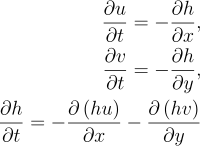
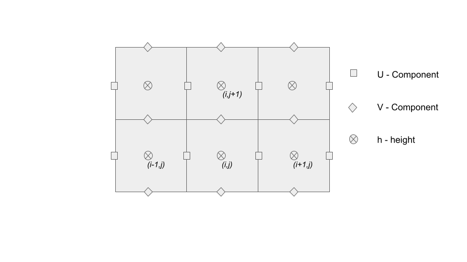
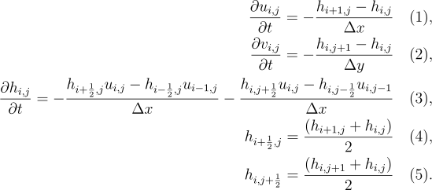
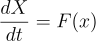
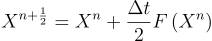
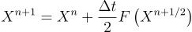

Simulation
The equations that are used in the model are simplified from the shallow water equations in order to make simulation easier. They describe propagation of linear gravity waves in a shallow body of water.

The simulation uses the Arakawa grid [1] that is shown below. The velocities' grid is offset from the height
grid in
order to
represent flow between height cells. If the velocity components were not offset then the water velocities
would represent net flux of water at a given point rather then the velocity of water between two grid cells.

The discretized equations used in the water simulation are shown below. Equations (1,2) calculate velocities
and equation (3) calculates the
change in height. Equations (4,5) define the half indicies used in equation (3).

Time Stepping Scheme
The simulation uses the Matsuno time stepping scheme. The Matsuno scheme is used rather then a simple explicit time stepping scheme because it results in a more stable simulation. If an simple explicit time step was used then the model can start oscillations leading to instability. Let us define the Matsuno scheme for the following vector equation:

First a half time step is taken as shown below,

Next a full time step forward is taken using the information generated from the half time step.

Next a full time step forward is taken using the information generated from the half time step.
The scheme is a modification of the well known family of Runge-Kutta time stepping schemes [2] which is
widely used in other fields.